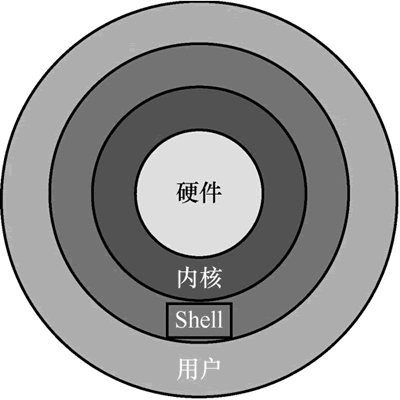

首页 > 编程笔记
Shell是什么（入门必读）
Shell 俗称壳，取这个名字是用来区别内核的“核”字，它是 Linux 操作系统的命令语言，同时又是该命令语言的解释器程序的简称。也就是说，Shell 既是一门编程语言，又是一个用 C语言编写的程序软件。
Shell 的位置处在用户与内核之间，起到承上启下的作用。由于安全性、复杂性和步骤烦琐等各种原因，普通用户是不能直接接触 Linux 内核的，那就需要另外再开发一个程序，这个程序的作用就是接收用户的操作命令，进行一些处理，最终将这些操作信息传递给内核。
这里的处理过程，可以理解为“将用户的各种操作转换为内核能看懂的语言”，相当于一个翻译官的角色，这样用户就能间接地使用操作系统内核了。
Shell 是在用户和内核之间增加的一层“代理”，既能简化用户的操作，又能保障内核的安全，两全其美。
总之，Shell 是一个程序软件，它连接了用户和 Linux 内核，让用户能够更加高效、安全、低成本地使用 Linux 内核，这就是 Shell 的本质。使用 Shell 可以实现对 Linux 操作系统的大部分管理。
Linux 操作系统有多种发行版本，这些发行版是由不同的组织机构开发的。不同的组织机构为了发展出自己的 Linux 操作系统特色，就会开发出功能类似但特性不同的软件，Shell 就是其中之一。
不同特性的 Shell 各有所长，有的占用资源少，有的支持高级编程功能，有的兼容性好，有的重视用户体验等。常见的Shell类型见下表。
Bash 作为许多 Linux 发行版的默认 Shell，它的特性如下：

图 1 Linux操作系统结构图
图 1 Linux操作系统结构图
Shell 的位置处在用户与内核之间，起到承上启下的作用。由于安全性、复杂性和步骤烦琐等各种原因，普通用户是不能直接接触 Linux 内核的，那就需要另外再开发一个程序，这个程序的作用就是接收用户的操作命令，进行一些处理，最终将这些操作信息传递给内核。
这里的处理过程，可以理解为“将用户的各种操作转换为内核能看懂的语言”，相当于一个翻译官的角色，这样用户就能间接地使用操作系统内核了。
Shell 是在用户和内核之间增加的一层“代理”，既能简化用户的操作，又能保障内核的安全，两全其美。
总之，Shell 是一个程序软件，它连接了用户和 Linux 内核，让用户能够更加高效、安全、低成本地使用 Linux 内核，这就是 Shell 的本质。使用 Shell 可以实现对 Linux 操作系统的大部分管理。
Linux 操作系统有多种发行版本，这些发行版是由不同的组织机构开发的。不同的组织机构为了发展出自己的 Linux 操作系统特色，就会开发出功能类似但特性不同的软件，Shell 就是其中之一。
不同特性的 Shell 各有所长，有的占用资源少，有的支持高级编程功能，有的兼容性好，有的重视用户体验等。常见的Shell类型见下表。
| 常见的Shell类型 | 介 绍 |
|---|---|
| sh | 全称叫 Bourne Shell，由 AT&T 公司的 Steve Bourne 开发，是 UNIX 系统上的标准 Shell |
| csh | 由柏克莱大学的 Bill Joy 设计，语法有点类似于 C语言，所以才得名为 C Shell，简称为 csh |
| tcsh | csh 的增强版，加入了命令补全功能，提供了更强大的语法支持 |
| ash | -个简单的、轻量级的 Shell，占用资源少，适合运行于低内存环境 |
| bash | 由 Brian Fox 为 GNU 项目编写的 UNIX Shell 和命令语言，保持了对 sh 的兼容性，是许多 Linux 发行版的默认 Shell |
Bash 作为许多 Linux 发行版的默认 Shell，它的特性如下：
- 自动补齐：使用Tab键可以自动补全命令和路径；
- 命令行历史：使用上下键可以翻看最近执行的命令，用 Ctrl+R 组合键可以搜索历史命令，用 history 命令可以调出之前执行的历史命令记录；
- 命令别名：用一个短命令去代替执行一段很长的命令；
- 输入输出重定向和管道：改变数据流的输入输出方向；
- 支持使用通配符和特殊符号；
- 支持变量用于条件测试以及迭代的控制结构。
最后再讲个小知识，Shell 程序一般都是放在 /bin 或者 /usr/bin 目录下，当前的 Linux 操作系统都支持哪些 Shell 程序，可以在 /etc/shells 文件中通过 cat 命令查看。这些特性后面会经常用到，这里可先了解，不明白也没关系，之后边实践边学习，很快就能掌握。
[root@noylinux]# cat /etc/shells /bin/sh /bin/bash ...... /bin/zsh
关注公众号「站长严长生」，在手机上阅读所有教程，随时随地都能学习。内含一款搜索神器，免费下载全网书籍和视频。

微信扫码关注公众号